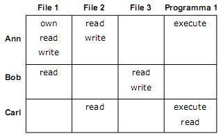
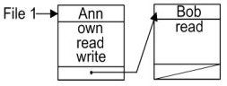
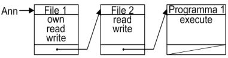
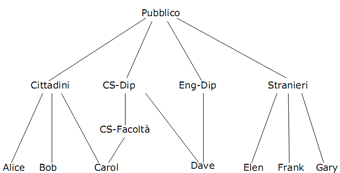
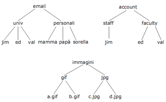
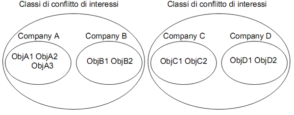

Torna alla pagina di Elementi di sicurezza e privatezza
:: Controllo dell'accesso ::
Introduzione
Nel capitolo sull'Autenticazione abbiamo visto che il controllo dell'accesso è quel modulo del sistema che valuta le richieste di accesso a servizi o dati e decide se permetterle o negarle, in base all'identità dell'utente e ai permessi accordatigli. Questo genere di attività sono particolarmente importanti in quei sistemi in cui deve essere assicurata l' accountability, ovvero esiste l'esigenza di sapere chi ha fatto cosa e quando, per stabilire le responsabilità.
Distinguiamo politiche e meccanismi del controllo dell'accesso, le prime che definiscono le linee guida per realizzare la sicurezza del sistema, i secondi che le implementano a livello hardware e software. Mantenere questi due aspetti separati ha un certo numero di vantaggi, dal momento che posso concentrarmi su uno trascurando momentaneamente l'altro. Ad esempio potrò confrontare diverse politiche d'accesso tra loro indipendentemente dai meccanismi per realizzarle, e viceversa; in particolare potrò sviluppare meccanismi in grado di implementare più linee guida.
I meccanismi sono basati sulla definizione di un reference monitor, un modulo del sistema di cui bisognerebbe garantire alcune proprietà:
- nessuno può modificarlo (tamper proof)
- deve essere non-bypassabile, ovvero non esiste accesso al sistema che non passi per lui
- va confinato in una parte sicura del sistema operativo (security kernel)
- deve avere dimensioni limitate per poter essere verificato con metodi rigorosi e formali
- deve essere resistente al covert channel
Il passaggio da politiche a meccanismi avviene attraverso la progettazione e la realizzazione di un modello, che consente di definire formalmente le specifiche e l'esecuzione del controllo dell'accesso. Proprio perché formale, deve racchiudere tutti i requisiti di sicurezza della mia politica (completezza) e in più deve essere consistente, ovvero non può avere contraddizioni. L'introduzione del modello fa parte dell'approccio multi-fase alla progettazione, e facilita la costruzione di un sistema sicuro. Se infatti il modello è completo e consistente, allora è anche sicuro; se poi il sistema viene implementato con meccanismi che rispettano le sue direttive, il sistema stesso è sicuro (rispetto al progetto, non in assoluto).
Il modello di sicurezza definisce dunque formalmente il sistema, e lo fa attraverso tre entità:
- soggetti, ovvero chi può accedere alle risorse
- oggetti, le risorse da proteggere
- azioni, cioè le operazioni che possono essere eseguite sulle precedenti entità
Altri due concetti importanti sono quello di stato di autorizzazione (o di protezione), ovvero l'insieme dei permessi accordati o negati ad ogni utente, e le regole di identificazione, cioè gli assiomi che devono essere soddisfatti perché i permessi siano concessi.
Studieremo ora in maggior dettaglio alcune politiche di sicurezza, quelle per il controllo dell'accesso e quelle di amministrazione. Le politiche per il controllo dell'accesso stabiliscono chi può/non può accedere alle risorse, e possono essere di tre tipi:
- DAC, politiche discrezionarie
- MAC, politiche mandatorie
- RAC, politiche basate sui ruoli
Le politiche di amministrazione definiscono invece chi può stabilire le regole che governano il controllo dell'accesso.
Politiche discrezionarie
Le politiche discrezionarie controllano l'accesso sulla base dell'identità degli utenti che lo richiedono e di regole che stabiliscono chi può o non può eseguire azioni sulle risorse. Si chiamano discrezionarie perché ciascun utente del sistema può decidere a propria discrezione a chi passare i propri privilegi.
Un primo modello che le rappresenta è il modello a matrice di accesso, inventato da Lampson nel 1971 ed esteso e formalizzato negli anni successivi da altri studiosi. Lo stato di protezione è definito da una tripla (S,O,A), dove S è l'insieme dei soggetti, O degli oggetti ed A è la matrice di accesso che dà il nome al modello. Le righe della matrice rappresentano i soggetti, mentre le colonne corrispondono agli oggetti. La notazione A[s,o] indica i privilegi, dunque le azioni, del soggetto s sull'oggetto o. Un esempio di matrice di accesso:

Prima di vedere come implementarla, elenchiamo brevemente i comandi necessari per modificare lo stato di protezione, alla cui esecuzione segue un aggiornamento della matrice:
enter r into A[s,o] , inserisce il privilegio r nella cella indicata
delete r from A[s,o] , toglie il privilegio r dalla cella indicata
create subject S' , crea un nuovo soggetto S'
destroy subject S' , elimina il soggetto S'
create object O' , crea un nuovo oggetto O'
destroy object O' , elimina l'oggetto O'
Ogni comando può avere una prima parte condizionale, che se verificata permette l'esecuzione delle primitive sopra elencate. Definito Q= (S,O,A) lo stato di autorizzazione attuale, l'esecuzione di un qualsiasi sequenza di comandi ne provoca la transizione allo stato Q'.
Implementazione
Data la quantità di soggetti e oggetti che caratterizzano un sistema, è facile immaginare quanto una matrice degli accessi possa diventare vasta. Dato però che la maggior parte delle celle rimarrebbero vuote (non sono definiti privilegi per ogni coppia di entità), memorizzarla come array bidimensionale sarebbe un enorme e sciocco spreco di spazio. Le tecniche implementative più utilizzate sono dunque la tabella di autorizzazione, le Access Control List e le Capability list.
Le tabelle di autorizzazione memorizzano in una tabella a tre colonne tutte e solo quelle triple (S,O,A) non nulle. Ad esempio:
| Soggetto
| Azione
| Oggetto
|
| Ann
| own
| File1
|
| Ann
| read
| File1
|
| Ann
| write
| File1
|
| Ann
| read
| File2
|
| Ann
| write
| File2
|
| Bob
| read
| File1
|
| Bob
| read
| File2
|
| ...
| ...
| ...
|
Nelle Access Control List (ACL) la memorizzazione avviene per colonne. Ogni riga rappresenta una risorsa, poi avrò tante colonne quanti sono i soggetti che possono interagirvi, nelle cui celle apparirà la lista dei loro permessi. Una possibile rappresentazione grafica è la seguente:

Infine le Capability List (ticket) memorizzano per riga, ovvero ogni riga rappresenta un utente con una lista di azioni consentite per i vari oggetti. Ad esempio:

Le ACL sono preferibili per quei sistemi in cui le operazioni per gli oggetti sono prevalenti, dal momento che rendono particolarmente efficiente il controllo dell'accesso su tali entità; per controllare i soggetti dovrei infatti scandire tutti gli elementi della lista. Le capability list al contrario hanno alte prestazioni nel controllo dell'accesso e nella gestione dei soggetti, ma devono garantire la non falsificabilità della lista per garantire la sicurezza, il che non è affatto semplice data la loro lunghezza. Per questo motivo i ticket sono l'implementazione meno diffusa delle matrici d'accesso.
Problema della safety e debolezze
Abbiamo visto prima che l'esecuzione dei comandi aggiorna lo stato di autorizzazione del sistema, portandolo dopo un certo numero di transizioni al suo stato finale.
Il problema della safety si pone questo dubbio: è possibile che l'esecuzione di una sequenza di comandi legittimi conduca il sistema in uno stato non lecito per le mie politiche? Sì, è possibile, ma quel che è peggio è che se non vengono fissate alcune limitazioni sui comandi, rilevare a priori quali potrebbero essere quelli che messi in successione riuscirebbero a violare le politiche si rivela un problema non decidibile, che richiede cioè un tempo polinomiale di risoluzione (decisamente oneroso). Lo si può rendere decidibile imponendo alcuni vincoli: i comandi devono essere mono-operazionali (possono eseguire un'unica operazione primitiva), sia i soggetti che gli oggetti devono essere in numero finito.
La principale debolezza delle politiche discrezionarie è che sono in grado di controllare solo gli accessi diretti alle informazioni, mentre non esiste alcun controllo sul come vengono utilizzate una volta rilasciate. Questa caratteristica rende il DAC vulnerabile ai Trojan Horse, che ricordiamo dall'Introduzione essere programmi che violano il sistema insediati all'interno di altri programmi considerati affidabili. i trojan vengono generalmente utilizzati come veicolo di virus e bombe logiche; vediamo un esempio del loro funzionamento.
Abbiamo un sistema con un controllo dell'accesso basato su politiche discrezionarie, e abbiamo l'utente Panda legittimo proprietario del file bamboo.txt. Se l'utente Tetty volesse leggere il file in questione pur non avendo permessi in lettura, potrebbe inserire nel sistema un'applicazione utile per tutti (superateIlMioEsame.exe) ma che nasconde due operazioni maliziose:
- lettura da
bamboo.txt
- sua trascrizione sul file
copiaBamboo.txt di cui Tetty è proprietario, ma di cui estende l'autorizzazione in scrittura a chiunque esegua il suo programma
Quando Panda esegue il trojan così confezionato, eseguirebbe a sua insaputa prima un'operazione di lettura su bamboo.txt (che è accordata in quanto egli ne è il legittimo proprietario), poi una trascrizione su copiaBamboo.txt, e il gioco è fatto. Visto che la DAC non prevede alcun controllo sul flusso di informazioni, non si può far nulla per evitare questo furto.
Politiche mandatorie
Se le DAC sono basate sulla definizione di regole nella forma soggetto oggetto azione definite a discrezione degli utenti, nelle politiche mandatorie non ci sono regole ma vincoli. Esse impongono infatti delle restrizioni sul flusso di informazioni, operando una distinzione precisa tra utenti e soggetti: i primi sono le persone (fidate), i secondi sono i processi (non fidati) eseguiti nel sistema per conto degli utenti. DAC e MAC non sono mutualmente esclusive, ma le prime possono fornire discrezionalità all'interno dei confini delle seconde.
Le politiche mandatorie si basano sulla classificazione di soggetti e oggetti, cui viene assegnata un'etichetta composta di due campi:
- livello di sicurezza, cioè un elemento dell'insieme (L) su cui è definito un ordinamento gerarchico totale. Ad esempio potremmo avere tre livelli di segretezza: Segretissimo (S+) > Segreto (S) > Normale (N) . Le etichette dei livelli possono essere chiamate in qualsiasi modo, basta definirle e dargli un nome
- categorie, ovvero un sottoinsieme di un insieme non gerarchico di elementi, su cui cioè non è definita alcuna relazione di ordinamento. Vengono utilizzate per creare domini di competenza (ad esempio suddividere le informazioni di un'azienda nei diversi ambiti: finanziari, anagrafici, responsabilità, ...) o per implementare restrizioni need-to-know. Queste ultime permettono di far accedere a delle informazioni solo se servono all'utente per svolgere un lavoro, così da evitare sconfinamenti di campo e assicurare una gradualità più fine (ad esempio all'utente
Cliente impedirò l'accesso ai miei dati sensibili)
Questa etichette rappresentano le classi di sicurezza (SC), che sono quindi gli elementi di un insieme parzialmente ordinato definito da una relazione di dominanza. Possono essere utilizzate secondo due politiche:
- politica che assicura la segretezza (modello Bell LaPadula) per garantire la confidenza
- politica che assicura l' integrità per garantire l'integrità dell'informazione (modello Biba)
Un altro modo di rappresentare la SC è la notazione: λ(s) oppure λ(o), a seconda che si riferisca a un soggetto o a un oggetto.
La relazione di dominanza tra classi di sicurezza è così definita: dati (L1,C1) e (L2,C2) due classi di sicurezza, dove L è il livello di sicurezza e C la categoria, si afferma che
|
(L1,C1) ≥ (L2,C2)
|
SE E SOLO SE
|
1. L1 ≥ L2
2. C1 ⊇ C2
|
Facciamo un esempio.
Abbiamo i seguenti livelli e categorie:
L = {TS,S} , dove TS >= S
C = {C1,C2,C3}
ed abbiamo due SC: (TS, {C1,C2}) , (S,{C2,C3})
E' vero che la prima domina la seconda? NO! Perché mentre la prima condizione sui livelli è soddisfatta, quelle sulle categorie no, dato che {C2,C3} non è sottoinsieme di {C1,C2}.
Dato l'elenco dei livelli e delle categorie, tutte le possibili classi di sicurezza generabili formano un reticolo di classificazione, che gode delle seguenti proprietà:
- riflessività, ogni classe domina sé stessa
- transitività, se ho tre classi x, y e z, se x ≥ y e y ≥ z allora x ≥ z
- antisimmetria, se una classe x domina y e viceversa, allora x = y
- least upper bound (LUB), date due SC siamo sicuri che ne esiste solo una che domina entrambe e che è la minore tra tutte quelle che le dominano
- greatest lower bound' (GLB), date due SC siamo sicuri che ne esiste solo una che è dominata da entrambe e che è la maggiore tra tutte quelle che dominano
Il LUB e il GLB sono di particolare interesse nell'analisi del reticolo, e sono facilmente calcolabili:
- il LUB tra (L1,C1) e (L2,C2) è (L3,C3), dove:
- L3 è il maggiore tra L1 e L2
- C3 = C1
U C2
- il GLB tra (L1,C1) e (L2,C2) è (L3,C3), dove:
- L3 è il minore tra L1 e L2
- C3 = C1 ∩ C2
Controllo di segretezza
La clearance è la classe di sicurezza assegnata ad ogni utente, che può dunque accedere a tutte quelle classi del sistema dominate dalla sua. In una politica mandatoria per la segretezza una SC associata a un utente riflette il suo livello di fiducia, mentre una SC associata a un oggetto rappresenta la sensibilità dell'informazione in esso contenuta; in particolare, gli oggetti creati ereditano la classificazione del soggetto che li ha creati.
La segretezza viene garantita impedendo flussi di informazione verso classi di accesso più basse o non compatibili. Ciò è assicurato da due proprietà vincolanti:
- no write down, il soggetto s può scrivere solo su oggetti o che hanno SC dominante: λ(o) ≥ λ(s). Se è vero che da una parte ciò impedisce l'acquisizione di informazioni riservate da parte di oggetti a cui ne è precluso l'accesso, dall'altra non garantisce l'integrità delle informazioni. Dato però che è la confidenzialità che vogliamo perseguire, ignoriamo questa conseguenza
- no read up, il soggetto s può leggere solo da oggetti o di SC inferiore: λ(s) ≥ λ(o)
Quanto detto finora è formalizzabile con il modello di Bell e LaPadula, nel quale il sistema viene rappresentato come stati e transizioni di stato. Gli stati v sono una tripla ordinata (b,M,λ), dove:
- b è l'insieme degli accessi nello stato corrente, ed è quindi una (S,O,A) (soggetto, oggetto, azione)
- M è la matrice di accesso con S righe ed O colonne, che definiscono celle in cui sono specificate le azioni corrispondenti
- λ è una funzione che restituisce la classe di sicurezza di soggetti o oggetti
Definito lo stato (b,M,λ), si dice che è sicuro se e solo se soddisfa le seguenti proprietà:
- simple security property, che dice che se un soggetto s ha eseguito un'azione di lettura a sull'oggetto o, allora λ(s) ≥ λ(o)
- *-property (star property), stabilisce invece che se l'azione a era di scrittura, allora λ(o) ≥ λ(s)
Queste due regole sono sostanzialmente la no write down e la no read up, formalizzate stavolta nel contesto del modello di Bell e LaPadula.
Sappiamo ora quando uno stato è sicuro, ma come possiamo dire lo stesso del sistema? Per farlo, utilizziamo il concetto di funzione di transizione di stato (T), che applicando R richieste di accesso ad uno stato sicuro di partenza V, lo conduce in un nuovo stato V anch'esso sicuro. In formula: T: V * R -> V'. Possiamo quindi affermare che un sistema (v0,R,T)' è sicuro se e solo se v0 è sicuro e se anche T(v0 * R) lo è.
Ricapitoliamo quanto visto finora ed enunciamo il teorema di sicurezza del modello Bell e LaPadula.
Un sistema (v0,R,T) è sicuro se e solo se
- v0 è uno stato sicuro
- la funzione T è tale che se
T(v,r) = v', dove v=(b,M,λ) e v'=(b',M',λ'), allora devono essere rispettate le seguenti condizioni:
- (s,o,read) ∈ b’ e (s,o,read) ∉ b ⇒ λ’(s) ≥ λ’(o)
"Se sei arrivato al nuovo stato v' con una nuova tripla, puoi effettuare l'operazione di lettura solo se λ’(s) ≥ λ’(o)"
- (s,o,read) ∈ b e λ’(s) <= λ’(o) ⇒ (s,o,read) ≥ b’
"Se sei arrivato in un nuovo stato dove non è più vero che la SC associata ad s domina quella di o, puoi eseguire l'operazione di lettura solo se (s,o,read) ∉ b, altrimenti avresti una violazione"
- (s,o,write) ∈ b’ e (s,o,write) ∉ b ⇒ λ’(o) ≥ λ’(s)
analoga alla 1
- (s,o,write) ∈ b e λ’(o) ≥ λ’(s) ⇒ (s,o,write) ∉ b’
analoga alla 2
Ad esempio abbiamo i seguenti livelli: L = {TS,S,C} , dove TS >= S >= C
e le seguenti SC:
λ(Sogg1) = TS
λ(Sogg2) = S
λ(Ogg1) = TS
λ(Ogg2) = C
Stando a quanto detto finora, Sogg1 può leggere e scrivere da Ogg1 e leggere e basta da Ogg2. Sogg2 non può leggere da Ogg1, ma può scriverci; viceversa non può scrivere su Ogg2, ma può leggerlo.
Per evitare che un soggetto si veda negato l'accesso a una risorsa perché violerebbe la simple security o la *-property, sono stati creati i System Z. In questi sistemi la funzione di transizione di stato è fatta in modo tale che se un utente vuole eseguire un'azione non consentita, viene temporaneamente abbassato il livello di sicurezza di tutti i soggetti e di tutti gli oggetti al livello più basso possibile, così da rilasciare l'accesso. Pur rimanendo sicuro rispetto al teorema di sicurezza, non è così sicuro in generale dal momento che vengono cambiate le classi di sicurezza a seconda delle necessità. Per questo motivo ai System Z può essere aggiunta la tranquillity property, che riporta il sistema alla situazione convenzionale, in cui il cambiamento delle classificazioni non è consentito.
Prima di passare al controllo dell'integrità, soffermiamoci sui limiti delle politiche mandatorie in generale.
- non sono previste declassazioni delle risorse dopo un certo periodo di tempo, né è tenuto in considerazione il fatto che un processo può produrre dati meno sensibili di quelli a cui accede. Questi requisiti possono essere soddisfatti applicando delle eccezioni alle restrizioni della politica mandatoria, rispettivamente con operazioni di declassificazione e sanitizzazione.
- la determinazione delle classi di accesso non è sempre facile e immediata. Ad esempio l' associazione di un insieme di proprietà può avere classificazione maggiore delle singole proprietà (la coppia "Nome - Stipendio" ha più valore dei campi considerati singolarmente). O ancora, un'aggregazione di più oggetti può avere una classificazione maggiore dei singoli valori che la compongono (sapere una risposta esatta dell'esame ha valore minore rispetto a saperle tutte).
- le politiche mandatorie sono vulnerabili ai covert channel, non offrendo nulla per rilevarli o contrastarli.
Controllo di integrità
La politica mandatoria per l'integrità è molto simile a quella per la segretezza, di cui potrebbe essere considerata il complementare. Non abbiamo più classi di segretezza ma classi di integrità IC, che riferite all'utente rappresentano il livello di correttezza delle sue informazioni, mentre associate agli oggetti riflettono il grado di fiducia nel contenuto. Anche in questo caso le categorie definiscono le aree di competenza per utenti e oggetti.
Per garantire l'integrità viene impedito il flusso di informazioni verso classi di integrità più alte o non compatibili, quindi dovranno essere applicate le seguenti politiche:
- no write up, il soggetto s può scrivere solo su oggetti o di SC inferiore: λ(s) ≥ λ(o)
- no read down, il soggetto s può leggere solo da oggetti o che hanno SC dominante: λ(o) ≥ λ(s)
Il modello di Biba (si legge "Baiba") è basato sugli stessi principi di Bell e LaPadula, quindi erediterà il concetto di stato e transizioni di stato. In particolare, l'integrità degli stati viene garantita imponendo la:
- simple security property, che dice che se un soggetto s ha eseguito un'azione di lettura a dall'oggetto o, allora λ(o) ≥ λ(s) . L'utente non può accedere a informazioni con un livello di correttezza minore del suo
- *-property (star property), stabilisce invece che se l'azione a era di scrittura, allora λ(s) ≥ λ(o). L'utente non è dunque autorizzato a modificare informazioni più critiche del livello che gli è stato assegnato
Come abbiamo imparato dal capitolo precedente, garantire la confidenza dell'informazione non ne assicura l'integrità, e viceversa. Nel modello di Biba così descritto, gli utenti potrebbero accedere con facilità alle informazioni con livelli di segretezza più alti dei loro. Il problema viene risolto con l'introduzione dei low water mark per soggetti, che lascia sostanzialmente inalterate le condizioni per la scrittura, mentre ne introduce una nuova per le letture: i soggetti possono leggere qualsiasi oggetto, ma subito dopo il loro livello viene declassato a quello inferiore dei due (λ(s) = glb{λ(s),λ(o)} ). Lo svantaggio non indifferente è che l'ordine delle operazioni influenza il risultato.
Esiste anche un low water mark per oggetti analogo al precedente, ma causa un'intollerabile violazione dell'integrità (che in una politica mandatoria di questo tipo non è ammissibile).
Un'ultima considerazione è che politiche di segretezza e integrità possono coesistere nello stesso sistema a patto che abbiano classificazione indipendenti (un insieme per le IC e un insieme per le SC).
Politiche amministrative
Le politiche amministrative definiscono a chi spetta il compito di concedere e/o revocare le autorizzazioni. Ad esempio nelle politiche mandatorie delegano all'amministratore centrale il compito di assegnare direttamente le classi di sicurezza dei soggetti, il che si traduce in un assegnamento indiretto delle stesse anche agli oggetti creati dagli utenti.
Per le DAC esistono invece più politiche amministrative:
- amministrazione centralizzata, dove ho un unico amministratore che controlla il sistema
- amministrazione gerarchica, dove l'amministratore centrale può assegnare responsabilità amministrative ad altri soggetti
- amministrazione cooperativa, in cui coesistono più amministratori che cooperano per la definizione delle autorizzazioni
- ownership, in cui ogni oggetto ha un proprietario che lo amministra e può estendere i propri diritti su di esso anche ad altri
- amministrazione decentralizzata, che introduce flessibilità nella gestione suddividendo l'amministrazione tra più utenti. Assieme all'ownership (cui è spesso associata) è tra le politiche amministrative più diffuse
Il limite dell'amministrazione decentralizzata è la difficoltà nel tener traccia dei permessi (chi può fare cosa) e nel revocare autorizzazioni. Se ad esempio un utente concede i propri privelegi a un altro e questi privilegi gli vengono poi tolti, l'autorizzazione al secondo utente deve rimanere o no? Dipende dall'organizzazione del sistema. Ad esempio i DBMS applicano un'amministrazione decentralizzata, ma il loro linguaggio consente di specificare come devono avvenire le concessioni e le revoche di autorizzazioni in modo più puntuale. Nella fattispecie utilizzano i comandi di grant e revoke, dove quest'ultimo può annullare i permessi solo all'utente specificato o a cascata a tutti gli utenti che aveva autorizzato.
DAC Avanzate
Le DAC Avanzate estendono il potere espressivo delle DAC viste finora, introducendo nuove funzionalità. Una è la possibilità di definire delle autorizzazioni con condizioni che ne limitano la validità, come il numero di richieste effettuate, la locazione dell'utente, l'ora del giorno, ... Alla classica tripla (Utente,Azione,Oggetto) si aggiunge dunque una condizione, che se non soddisfatta impedisce al sistema di applicare il privilegio sull'oggetto all'utente indicato.
L'estensione fondamentale introdotta con le DAC avanzate è però l' autorizzazione su/per gruppi, che fa fronte alla difficoltà di dover gestire ogni entità singolarmente anche in sistemi molto estesi. Ecco dunque che soggetti e oggetti vengono raggruppati in gerarchie astratte, tipicamente rappresentate con strutture ad albero. Alcuni esempi: utenti/gruppi, oggetti/classi, file/directory.
|

Gerarchia utenti/gruppi
|

Gerarchia oggetti/classi
|
In una simile organizzazione i privilegi potrebbero propagarsi dalla radice ai discendenti, risparmiando all'amministratore l'onere di assegnare singole autorizzazioni. Ma se non volessi applicare questa proprietà su un certo elemento? Ad esempio nei sistemi operativi UNIX non è vero in generale che i privilegi di una directory si propagano automaticamente ai file che contiene. Come faccio?
L'autorizzazione su/per gruppi risolve il problema supportando la definizione di eccezioni su oggetti o soggetti specifici. Hanno la seguente sintassi:
- autorizzazione positiva:
(Soggetto, Azione, Oggetto, +)
Ad esempio Studenti, write, swappa.php, +)
- autorizzazione negativa:
(Soggetto, Azione, Oggetto, -)
Ad esempio (Piera, read, galateo.txt, -)
Le autorizzazioni negative sono utilizzate nelle politiche aperte, che seguono il principio per cui il soggetto può fare tutto ciò che eredita dalla sua gerarchia a meno di eccezioni. Le politiche chiuse ragionano invece al contrario, negando ogni permesso a meno di eccezioni espresse con autorizzazioni positive.
I modelli DAC più recenti cercano di essere flessibili e supportare il maggior numero di politiche differenti, sia quelle sulle autorizzazioni o la propagazione, sia quelle sulla risoluzione dei conflitti che vedremo nel paragrafo successivo.
Conflitti e soluzioni
I principali problemi legati alle DAC avanzate sono la non completezza e l' inconsistenza.
Le non completezza sussiste quando per un elemento non sono definite autorizzazioni positive o negative, dunque il sistema non sa come trattarli. Una soluzione è assumere la completezza e tanti saluti, come fa Orion (in assenza di informazioni più dettagliate da parte della prof, suppongo che Orion sia questo); un'altra è invece assumere come default una politica aperta o chiusa, così che le incompletezze vengano automaticamente appianate.
L' inconsistenza è invece l'applicazione per uno stesso elemento di autorizzazioni positive e negative. Esistono diverse politiche di risoluzione per risolvere questo conflitto, vediamole una per una ricordando che non ne esiste una migliore dell'altra in generale:
- nella denials-take-precedence (dtp) le autorizzazioni negative vincono sempre sulle positive, anche se in netta minoranza. E' la duale della permissions-take-precedence (ptp), che fa l'esatto contrario
- la most-specific-takes-precedence (mstp) prevede l'applicazione dell'autorizzazione più specifica in assoluto per un certo elemento, mentre per la most-specific-along-a-path-takes-precedence (msaptp) si confrontano le più specifiche su ogni percorso di autorizzazione per vedere chi ha il sopravvento. Pur essendo piuttosto logiche e intuitive, queste due strategie non sempre risolvono i conflitti
- il concetto che sta alla base della strong vs weak è che ci sono alcune autorizzazioni forti ed altre deboli, e quelle forti vincono sempre su quelle deboli (senza eccezioni). Tra due autorizzazioni deboli viene generalmente applicata la politica del msaptp, ma è tra due forti che sorge il problema: chi sopravvale? Sta dunque all'amministratore distribuire autorizzazioni consistenti, il che significa che nemmeno questa tecnica risolve automaticamente i conflitti
Abbiamo infine quattro possibili politiche di risoluzione basate sulla priorità:
- l' esplicita priorità è la più difficile da gestire e prevede la distribuzione dei privilegi in modo diretto
- la posizionale è un raffinamento del caso precedente, in cui le priorità sono assegnate in base al loro ordine di definizione, ovvero la più recente è la più importante. Difficilmente applicabile in contesti decentralizzati
- nella grantor-dependent la priorità dipende da chi ha rilasciato l'autorizzazione
- nella time-dependent dipende invece da quando è stata concessa
Chinese Wall
Il chinese wall è un altro modello di controllo dell'accesso, in particolare una politica di tipo mandatorio che applica la separazione dinamica dei privilegi per prevenire flussi di informzione che potrebbero causare conflitti di interesse. Lo scenario per cui è pensato è quello in cui ho più organizzazioni che lavorano nello stesso contesto, ma sono in competizione tra loro.

Agli oggetti viene applicata una precisa gerarchia, in cui vengono definiti:
- basic object: oggetti che contengono informazioni
- company dataset: gruppo di oggetti che appartengono alla stessa organizzazione
- classi in conflitto di interesse: insieme dei detaset delle organizzazioni in competizione
Il chinese wall opera attraverso la definizione e l'applicazione di regole non ben formalizzate che controllano gli accessi in modo che un utente non possa accedere a diverse classi in conflitto di interesse. Ciò significa che se inizialmente possono accedere ai company dataset che preferiscono, una volta ottenuta l'autorizzazione l'insieme dei loro privilegi viene aggiornato, in modo che non possa più accedere alle informazioni della concorrenza. Questa situazione è tipica della separazione dei privilegi dinamica, in cui in principio non esistono limitazioni per gli utenti, ma i loro privilegi vengono ristretti man mano che compiono operazioni. Al contrario, nella separazione statica avviene una distribuzione a priori delle autorizzazioni, in modo che gli utenti non abbiano troppi privilegi fin dall'inizio. Facciamo un esempio.
Ho una transazione composta da quattro operazioni (fare l'ordine, spedirlo, registrare la fattura, pagare) e ho quattro persone in grado di eseguirla. Una separazione statica prevede che l'amministratore assegni le operazioni in modo che nessuno possa compiere la transazione da solo. Una possibile separazione dinamica è che ogni persona possa fare qualsiasi operazione ma non possa completare il processo, oppure fare in modo che il sistema rigetti il tentativo da parte di un utente di compierle tutte e quattro da solo.
Il principio che sta dietro la separazione dei privilegi è far sì che nessun utente ne abbia abbastanza da poter abusare del sistema. L'idea è nobile, ma non risolve un certo numero di problemi:
- non gestisce la storia degli accessi
- non garantisce l'accessibilità, dal momento che se tutti gli utenti volessero accedere allo stesso dataset si bloccherebbe il sistema (nessuno leggerà più dagli altri)
- non fornisce procedure per sanitizzare i dati
Tutti questi limiti fanno del chinese wall un sistema poco diffuso.
Politiche basate sui ruoli
Le politiche di controllo degli accessi che abbiamo studiato finora avevano tutte un'idea di base: ho un soggetto che vuole compiere una certa azione su un oggetto, gli do il permesso o glielo nego. Le politiche basate sui ruoli rovesciano la prospettiva, basandosi sull'osservazione che spesso il completamento di certe attività richiede il rilascio di più di un privilegio, quindi può rivelarsi più conveniente spostare l'attenzione dal singolo utente all'applicazione (application/task). Vengono così definiti i ruoli, ovvero un insieme di privilegi (azioni e responsabilità) legati a una particolare attività lavorativa, definiti come Ruolo = (oggetto,azione). Possono essere generici se indicano un tipo di lavoro (professore, assistente, ...), specifici se invece si riferiscono a un compito preciso (fare la lezione, preparare gli esami, ...).
L'accesso degli utenti agli oggetti è mediato dal ruolo, ottenendo due livelli di privilegi:
- gestione della risorse ad opera dei ruoli, gli unici autorizzati ad accedere agli oggetti
- attivazione della gestione stessa da parte degli utenti, autorizzati ad attivare ruoli e dunque ereditarne i privilegi
Pur rappresentando concetti simili, gruppi e ruoli non vanno confusi.
- Gruppi: insieme di utenti(statici). Statici significa che se un utente fa parte del gruppo, allora può sempre eseguire le operazioni concesse, senza dover attivare nessun ruolo. Quindi la definizione di gruppo non rimane invariata, si possono aggiungere altri utenti.
- Ruoli: insieme di privilegi(dinamici). Dinamici significa che i privilegi dipendono dal ruolo che l'utente ha attivato.
Generalmente i ruoli vengono organizzati in gerarchie di specializzazione, facilitando così la propagazione delle autorizzazioni. In particolare la propagazione può avvenire da un ruolo a tutti i suoi sottoruoli, o da un ruolo che eredita i privilegi da quelli da cui discende.
Analizziamo ora vantaggi e svantaggi. I vantaggi di una politica basata sui ruoli sono:
- la gestione semplificata delle autorizzazioni, dato che non devo più assegnarle per ogni utente, ma solo ai ruoli
- posso utilizzare la gerarchia dei ruoli per definire implicazioni
- è possibile associare delle restrizioni che pongono dei vincoli ai ruoli, ad esempio sul numero massimo di utenti che possono attivarne uno, o il numero massimo di ruoli attivabili in una sessione, ecc
- il least privilege, cioè la possibilità di associare ad ogni ruolo il numero minimo indispensabile di privilegi per compiere determinate operazioni in modo efficiente. Si contrastano così l'occorrenza di abusi danni o violazioni
- la separazione dei privilegi, che abbiamo meglio spiegato sopra
Gli svantaggi:
- le propagazioni basate sulle gerarchie non sono sempre volute, spesso anzi contrastano il principio del least privilege
- servono anche politiche amministrative
- gli utenti che appartengono allo stesso gruppo sono di fatto indistinguibili
Le politiche basate sui ruoli sono state standardizzate nel 2004 dall'ANSI, che ha approvato lo standard RBAC (Role Based Access Control). Ha quattro componenti principali, di cui solo il primo è fondamentale:
- core RBAC, che include i concetti base della politica, ovvero: gli utenti sono assegnati a ruoli da cui acquisiscono privilegi, gli assegnamenti utenti-ruoli e permessi-ruoli possono essere molti-a-molti. L'attivazione e la disattivazione selettiva di un ruolo da parte di un utente è rappresentata col concetto di sessione
- gerarchia dei ruoli, generali (arbitrarie, non necessariamente ad albero) o limitate
- separazione statica dei privilegi e
- separazione dinamica dei privilegi, entrambe indipendenti dalla presenza di gerarchie
Apache
Nei webserver Apache la gestione della sicurezza passa attraverso i file di configurazione delle autorizzazioni .htaccess ed il modulo mod_access.
I primi sono file di testo che contengono le regole di accesso relative alla cartella in cui sono contenuti, e possono definire sia autorizzazioni positive (allow) che negative (deny). Data una richiesta di accesso ad un file, la valutazione del file .htaccess parte dalla directory radice del server e ridiscende lungo il suo percorso valutando ad ogni sottodirectory il suo file di configurazione delle autorizzazioni.
Il modulo mod_access supporta invece le direttive host-based o user-based per il controllo dell'accesso.
Le direttive host-based si applicano all'intero sito e possono essere definite in base a locazioni o variabili d'ambiente (vedi tabella):
|
Restrizioni
|
Regole
|
|
sulla locazione
|
Allow from [host-or-network]/all
Deny from [host-or-network]/all
Dove [host-or-network] sta per l'indirizzo delle locazioni di cui voglio permettere o impedire l'accesso. Può essere scritto come nome di dominio (www.swappa.it), indirizzo IP, rete o maschera, ...
|
|
su variabili d'ambiente
|
Allow from env = env-variable
Deny from env = env-variable
Dove env-variable sono variabili di ambiente basate su attributi delle richieste http. Sono controllate dal modulo mod-setenvif.
|
Ad esempio:
(1) SetEnvIf Referer www.swappa.it internal_site
(2) Allow from env = internal_site
La riga (1) dice che considero www.swappa.it come internal_site quando appare nel campo referer dell'header http. La riga (2) dice che tutti coloro che hanno env = internal_site hanno l'autorizzazione
Le direttive user-based dipendono invece dall'identità dell'utente, dunque ne presuppongono un'autenticazione. Hanno tre tipi di regole:
require user u1 u2 u3 ...
dove ui sono gli username degli utenti che possono accedere
require group g1 g2 g3 ...
dove gi sono i gruppi che possono accedere
require valid_user
ovvero possono accedere solo gli utenti che si sono autenticati con successo
Le direttive host-based e user-based non sono mutualmente esclusive, ma possono essere usate contemporaneamente. La direttiva satisfy può essere utilizzata per stabilire come devono interagire tra loro:
satisfy all, permette l'accesso se entrambe le direttive sono soddisfatte
satisfy any, se è soddisfatta almeno una delle due
Si può inoltre utilizzare la direttiva order per stabilire l'ordine di valutazione delle deny e delle allow. Può assumere tre valori:
order deny, allow, le direttive deny vengono valutate per prime: politica aperta
order allow, deny, le direttive allow vengono valutate per prime: politica chiusa
order mutual-failure, la richiesta non deve soddisfare una certa deny, ma deve soddisfare una certa allow
La granularità delle regole di accesso indica il livello delle risorse di cui sto controllando gli accessi, se di file o di metodo. Nel primo caso le direttive vengono applicate su singoli file, quindi su tutti quei file il cui nome corrisponde a quello indicato nel campo reg-exp:
<FilesMatch reg-exp>
direttive
</FilesMatch>
Nel secondo caso invece il controllo avviene in base al metodo (GET, POST, ...) utilizzato dall'utente:
<Limit access_method>
direttive
</Limit>
Linux
Linux è un sistema operativo della famiglia UNIX, la cui politica discrezionaria è basata sull' identificatore utente (UID) e l' identificatore gruppo (GID). L'UID è un valore intero univoco assegnato ad ogni utente che si è autenticato, mentre il GID è un intero che rappresenta il gruppo primario di cui l'utente stesso è membro. Le associazioni login-password sono memorizzate nel file /etc/shadow, mentre i gruppi e i loro membri sono definiti nel file /etc/group. Ai file viene assegnato l'UID e il GID del processo che li ha generati, anche se possono poi essere cambiati con i comandi chown e chgrp, rispettivamente.
Ogni file ha associato una lista di nove privilegi divisi in tre parti, la prima che si riferisce al proprietario, la seconda ai membri del gruppo del proprietario e la terza a tutti gli altri. I privilegi sono: r (read), w (write) e x (execute). Ad esempio la seguente stringa di privilegi rwxrw-r-- stabilisce che il proprietario del file ha tutti i privilegi, gli appartenenti al suo stesso gruppo possono leggerlo e scriverlo ma non eseguirlo, tutti gli altri possono solo leggerlo. Esistono altri modi di rappresentare i privilegi, ad esempio con cifre in base 8 o in binario.
Esistono altri privilegi addizionali, ovvero:
- sticky bit, indica che solo il proprietario del file e della direcyory può rimuovere o rinominare i file contenuti nella cartella
- setuid, l'UID del processo che esegue un file non è più quello dell'utente che lo lancia, ma quello del proprietario del file
- setgid, analogo al setuid ma per il GID
Setuid permette ad un utente che già possiede privilegi di esecuzione su un file di eseguirlo anche con i privilegi dell'utente proprietario. Si rappresenta con una s minuscola se si vuole concedere tale privilegio su un file eseguibile, S maiuscola altrimenti. Il setgid funziona allo stesso modo, ma opera sui gruppi.
Torna alla pagina di Elementi di sicurezza e privatezza